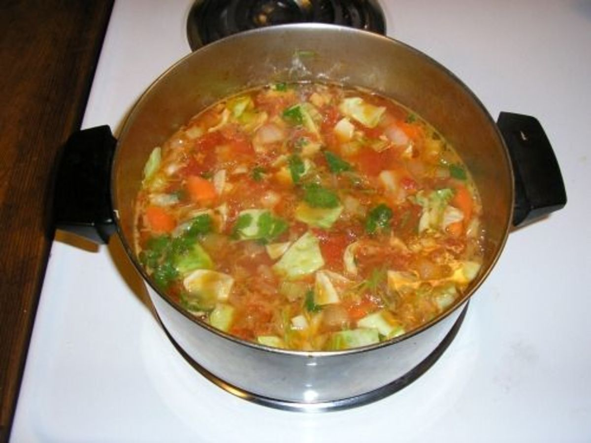

Bean Soup

Description
This recipe makes a large pot worth of Portuguese bean soup. Delicious and wonderful to have on a cold day. Also a great way to get your vegetables!
Ingredients
- 4 Cans of Romano Beans
- 1 Small Tomato Paste Can
- 1 Medium Dimpled Cabbage
- 2 Big Carrots
- 6 - 8 Large Yukon Gold Potatoes
- ¼ Cup Olive Oil
- Medium Onion (Quartered)
Instructions
- Fill large stock pot 1/3 full of water.
- Add cut up ingredients before boiling.
- Set heat to high until boiling. Once boiling turn down to medium.
- Cook until water thickens (multiple hours).